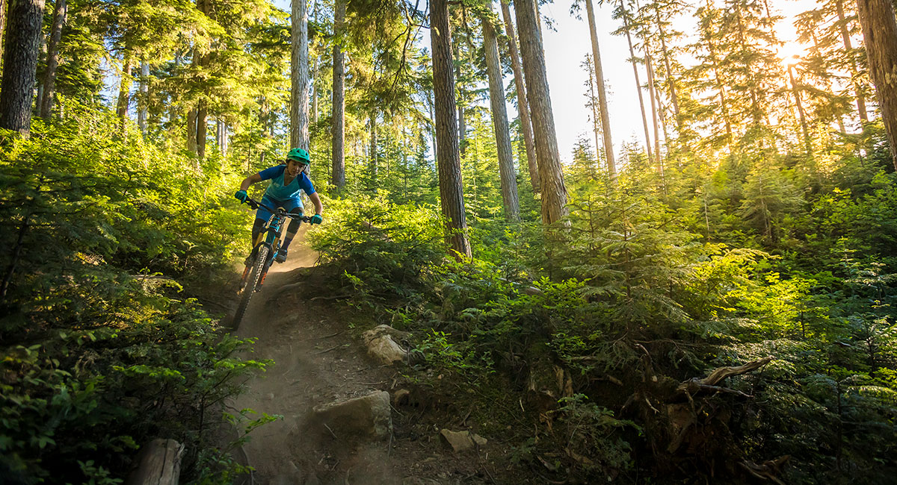
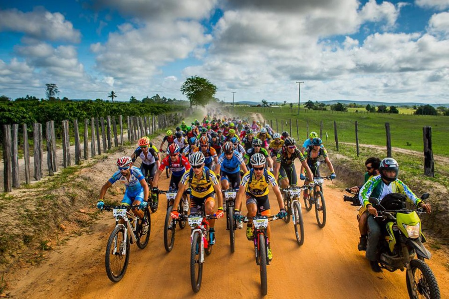
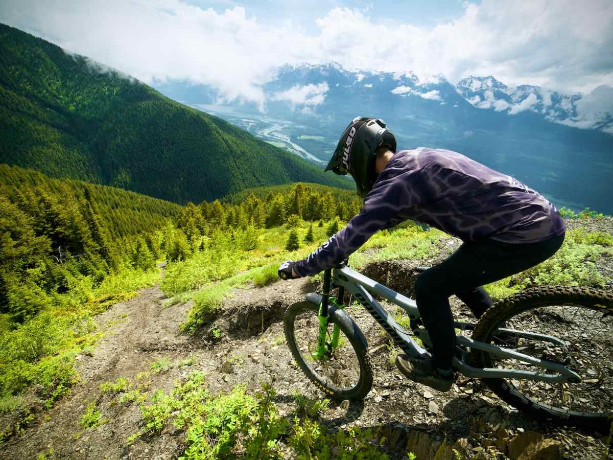

1°
Cross country
Chamada de XC, essa categoria pode ser realizada com bicicletas de passeio ou de competição. Seja como for, a regra é que o ciclista pedale rapidamente, tanto em distâncias longas, quanto nas menores. Estamos falando de uma modalidade que exige muito conhecimento técnico e, claro, esforço físico do praticante.
2°
Maratona
Consiste em uma extensão do clássico cross country. No entanto, conta com percursos bem mais longos, como acontece na prova Brasil Ride — uma supermaratona, em que os atletas pedalam centenas de quilômetros durante diversos dias.
3°
Downhill
Modalidade com foco em percorrer um caminho composto por descidas. É importante que o ciclista realize o percurso em alta velocidade e, mesmo assim, consiga driblar variados obstáculos. Por essas e outras, é necessário que o atleta tenha não apenas entendimento técnico, mas sim atenção e destreza para fazer bons saltos e desviar de barreiras.